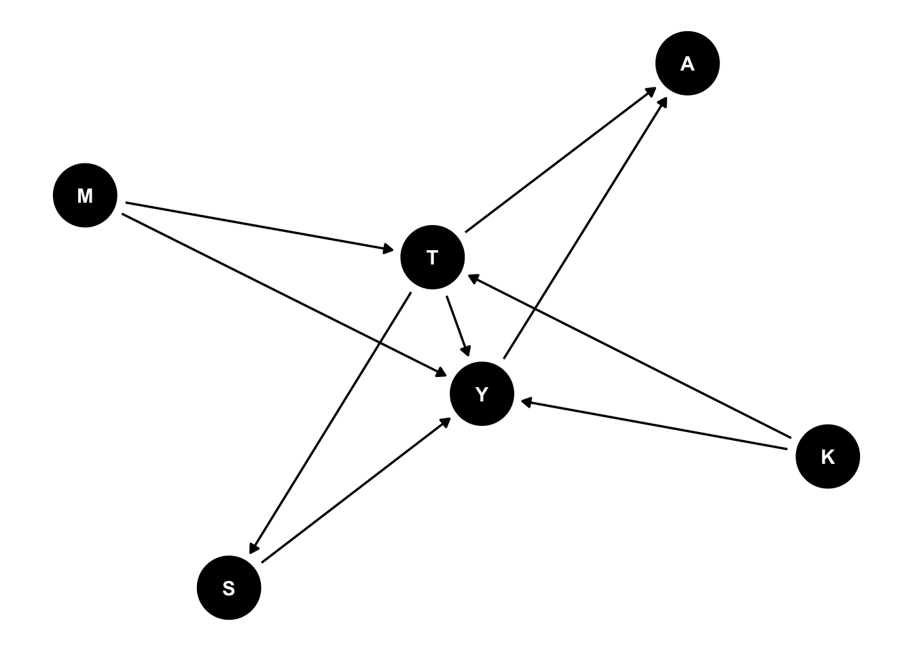
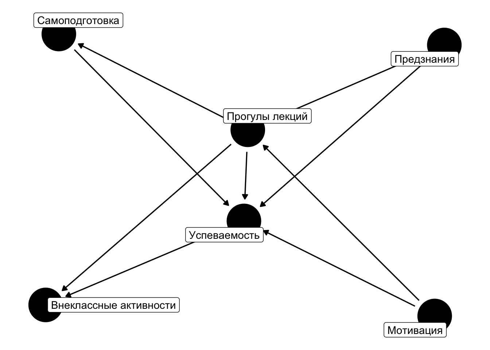
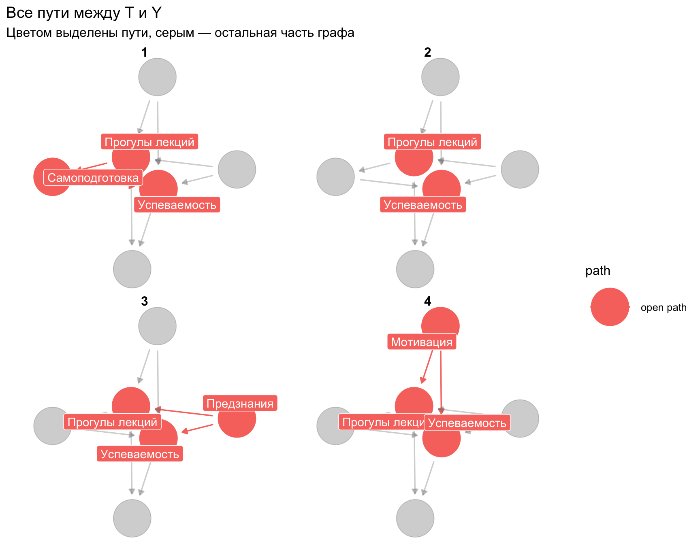
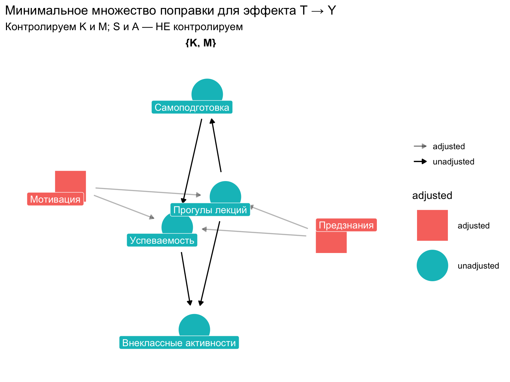
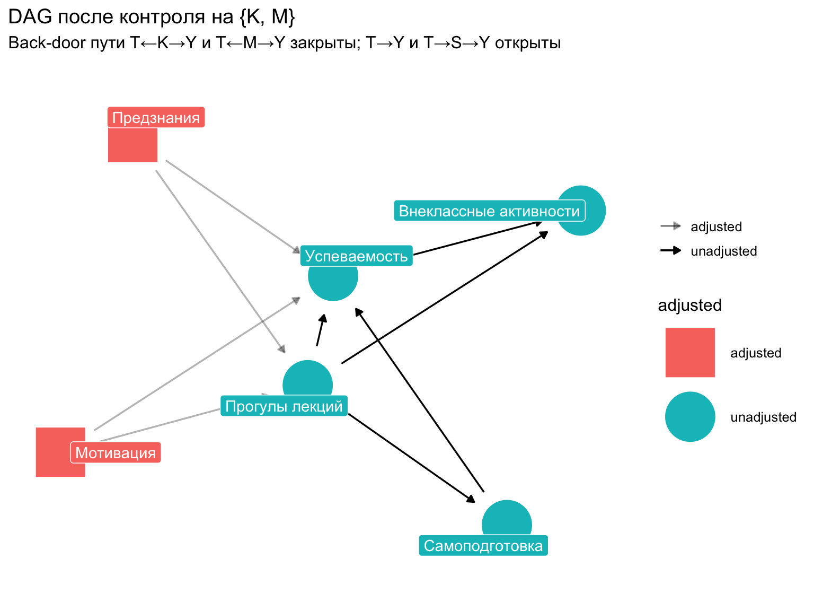
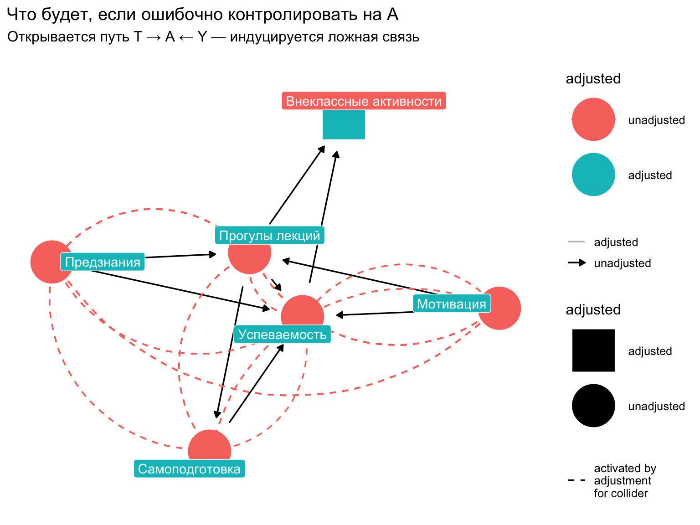
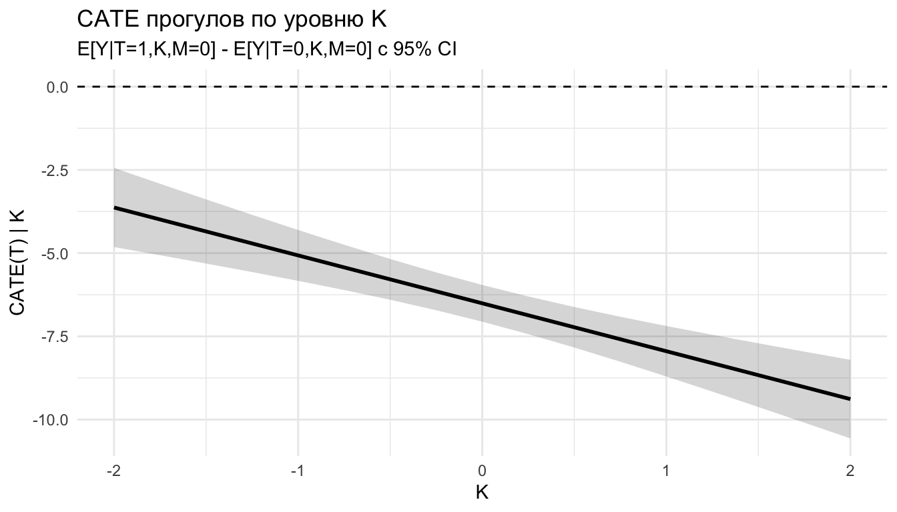
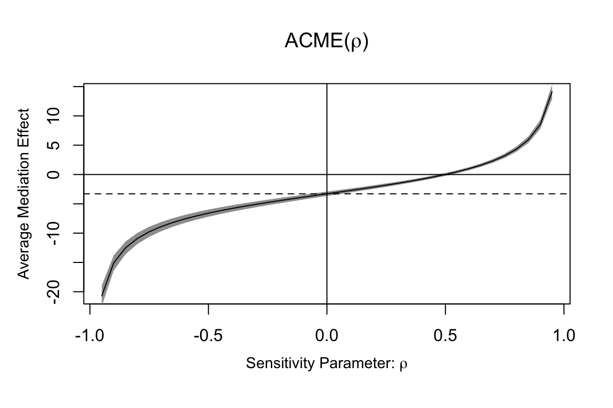

library(dagitty)
library(ggdag)
library(ggplot2)
library(dplyr)
library(broom)
library(mediation) # для causal mediation3 DAG и причинные механизмы
3.1 Постановка задачи
Преподаватели эконометрики хотят изучить, как прогулы лекций (\(T\)) влияют на качество освоения дисциплин (\(Y\)).
- \(T\) — бинарная: \(T_i=1\), если студент пропустил более половины лекций.
- \(Y\) — баллы за экзамен (от 0 до 100).
- \(M\) — мотивация студента (шкала).
- \(K\) — предварительные знания.
- \(S\) — время на самостоятельную подготовку.
- \(A\) — участие во внеклассных активностях.
Допущения о связях между переменными:
- \(M\) и \(K\) влияют и на \(T\) (мотивированные студенты прогуливают реже, а студенты с сильной базой — чаще: уверены, что нагонят сами), и на \(Y\) (и мотивация, и база повышают балл) — это потенциальные конфаундеры.
- \(S\) зависит от \(T\) (тот, кто ходит на лекции, больше готовится сам) и влияет на \(Y\) — это потенциальный медиатор.
- \(A\) зависит и от \(T\), и от \(Y\) (активные студенты-отличники получают больше приглашений; пропуски освобождают время) — это потенциальный коллайдер.
Цель — оценить причинный эффект \(T\) на \(Y\), разобраться, для кого он сильнее (модерация), и через какие каналы работает (медиация).
3.2 Часть 1. DAG: качественная карта допущений
3.2.1 Задание графа
dag_lectures <- dagify(
Y ~ T + S + K + M,
A ~ T + Y,
S ~ T,
T ~ K + M,
exposure = "T",
outcome = "Y",
labels = c(
T = "Прогулы лекций",
Y = "Успеваемость",
M = "Мотивация",
K = "Предзнания",
S = "Самоподготовка",
A = "Внеклассные активности"
)
)3.2.2 Базовая визуализация
ggdag(dag_lectures, text = TRUE) + theme_dag()
ggdag(dag_lectures, text = FALSE, use_labels = "label") +
theme_dag()
3.2.3 Все пути от \(T\) к \(Y\)
ggdag_paths(dag_lectures, from = "T", to = "Y",
text = FALSE, use_labels = "label", shadow = TRUE) +
theme_dag() +
labs(title = "Все пути между T и Y",
subtitle = "Цветом выделены пути, серым — остальная часть графа")
Текстовый список путей:
paths(dag_lectures, from = "T", to = "Y")$paths
[1] "T -> A <- Y" "T -> S -> Y" "T -> Y" "T <- K -> Y" "T <- M -> Y"
$open
[1] FALSE TRUE TRUE TRUE TRUEИнтерпретация путей:
- \(T \to Y\) — каузальный, открытый.
- \(T \to S \to Y\) — каузальный, открытый (это через медиатор).
- \(T \leftarrow K \to Y\) — некаузальный (back-door), открытый.
- \(T \leftarrow M \to Y\) — некаузальный (back-door), открытый.
- \(T \to A \leftarrow Y\) — некаузальный, закрыт автоматически (на пути коллайдер \(A\), на который мы не контролируем).
Чтобы получить общий (total) причинный эффект \(T \to Y\), нужно:
- оставить открытыми каузальные пути 1 и 2;
- закрыть некаузальные открытые back-door пути 3 и 4;
- не открывать путь 5 контролем на \(A\).
3.2.4 Множество поправки
adjustmentSets(dag_lectures, exposure = "T", outcome = "Y"){ K, M }ggdag_adjustment_set(dag_lectures,
text = FALSE, use_labels = "label", shadow = TRUE) +
theme_dag() +
labs(title = "Минимальное множество поправки для эффекта T → Y",
subtitle = "Контролируем K и M; S и A — НЕ контролируем")
Минимальное adjustment set: \(\{K, M\}\). Контроль на \(S\) закрыл бы каузальный путь \(T \to S \to Y\) (overcontrol bias); контроль на \(A\) открыл бы коллайдер-путь \(T \to A \leftarrow Y\) (collider bias).
3.2.5 Что меняется, когда мы условились на \(\{K, M\}\)
ggdag_adjust(dag_lectures, var = c("K", "M"),
text = FALSE, use_labels = "label",
collider_lines = FALSE) +
theme_dag() +
labs(title = "DAG после контроля на {K, M}",
subtitle = "Back-door пути T←K→Y и T←M→Y закрыты; T→Y и T→S→Y открыты")
Для контраста посмотрим, что произошло бы при некорректной обусловленности на коллайдере \(A\):
ggdag_adjust(dag_lectures, var = "A",
text = FALSE, use_labels = "label",
collider_lines = TRUE) +
theme_dag() +
labs(title = "Что будет, если ошибочно контролировать на A",
subtitle = "Открывается путь T → A ← Y — индуцируется ложная связь")
3.3 Часть 2. Симуляция данных
Чтобы все шаги были воспроизводимы, сгенерируем данные, согласованные с DAG.
set.seed(350)
n <- 2000
# Экзогенные конфаундеры
M <- rnorm(n, mean = 0, sd = 1) # мотивация
K <- rnorm(n, mean = 0, sd = 1) # предзнания
# Прогулы: вероятнее у немотивированных и тех, у кого выше базовые знания
lin_T <- -0.8*M + 0.3*K
T <- rbinom(n, 1, plogis(lin_T))
# Самоподготовка: меньше у прогульщиков
S <- 1.0 - 0.7*T + 0.4*M + rnorm(n, sd = 0.6)
# Истинные параметры эффекта T на Y:
# прямой эффект T на Y : -3 балла
# эффект T через S на Y : -0.7 (на S) * 5 (S на Y) = -3.5 балла
# общий TE : примерно -6.5 балла
# модерация по K: при высоком K прогулы вреднее на 1.5 балла
Y <- 70 - 3*T + 5*S + 6*M + 4*K - 1.5*T*K + rnorm(n, sd = 5)
# Активности: коллайдер T → A ← Y
A <- rbinom(n, 1, plogis(-1 + 0.6*T + 0.04*(Y - 70)))
d <- data.frame(T = factor(T, levels = c(0,1)),
T_num = T, Y, M, K, S, A = factor(A))summary(d[, c("Y","M","K","S")]) Y M K S
Min. : 36.52 Min. :-3.843143 Min. :-3.40469 Min. :-2.42752
1st Qu.: 63.79 1st Qu.:-0.684058 1st Qu.:-0.66567 1st Qu.: 0.07662
Median : 71.66 Median :-0.042331 Median : 0.01511 Median : 0.67550
Mean : 71.42 Mean :-0.006536 Mean :-0.02158 Mean : 0.66617
3rd Qu.: 79.36 3rd Qu.: 0.666203 3rd Qu.: 0.63711 3rd Qu.: 1.26215
Max. :119.59 Max. : 3.728469 Max. : 3.36623 Max. : 3.75760 table(d$T)
0 1
1010 990 3.4 Часть 3. Оценка общего эффекта (TE)
3.4.1 Наивная регрессия без контролей
m_naive <- lm(Y ~ T, data = d)
tidy(m_naive, conf.int = TRUE)# A tibble: 2 × 7
term estimate std.error statistic p.value conf.low conf.high
<chr> <dbl> <dbl> <dbl> <dbl> <dbl> <dbl>
1 (Intercept) 77.1 0.316 244. 0 76.5 77.7
2 T1 -11.4 0.449 -25.4 5.46e-124 -12.3 -10.5Коэффициент при \(T\) смещён: он смешивает причинный эффект со связью через открытые back-door пути \(T \leftarrow K \to Y\) и \(T \leftarrow M \to Y\).
3.4.2 Регрессия с adjustment set \(\{K, M\}\)
m_te <- lm(Y ~ T + K + M, data = d)
tidy(m_te, conf.int = TRUE)# A tibble: 4 × 7
term estimate std.error statistic p.value conf.low conf.high
<chr> <dbl> <dbl> <dbl> <dbl> <dbl> <dbl>
1 (Intercept) 74.8 0.192 390. 0 74.4 75.1
2 T1 -6.52 0.283 -23.0 5.69e-104 -7.07 -5.96
3 K 3.35 0.134 24.9 1.39e-119 3.08 3.61
4 M 7.89 0.139 56.7 0 7.62 8.16Интерпретация. Коэффициент при T1 — это оценка \(\mathbb{E}[Y(1)-Y(0)]\) при условии корректности DAG: контроль на \(\{K,M\}\) закрывает оба back-door пути, путь \(T\to A\leftarrow Y\) закрыт сам собой, а каузальные пути \(T\to Y\) и \(T\to S\to Y\) остаются открытыми. Полученная оценка должна быть близка к истинному общему эффекту \(-3 + (-0.7)\cdot 5 = -6.5\) балла.
3.4.3 Что произойдёт, если контролировать «всё подряд»
Иллюстрация overcontrol (через медиатор \(S\)) и collider bias (через \(A\)):
m_bad_S <- lm(Y ~ T + K + M + S, data = d) # overcontrol: закрыли T→S→Y
m_bad_A <- lm(Y ~ T + K + M + A, data = d) # collider: открыли T→A←Y
m_bad_SA <- lm(Y ~ T + K + M + S + A, data = d) # обе ошибки сразу
dplyr::bind_rows(
tidy(m_te, conf.int = TRUE) %>% dplyr::mutate(model = "{K,M} (правильно)"),
tidy(m_bad_S, conf.int = TRUE) %>% dplyr::mutate(model = "{K,M,S} (overcontrol)"),
tidy(m_bad_A, conf.int = TRUE) %>% dplyr::mutate(model = "{K,M,A} (collider)"),
tidy(m_bad_SA, conf.int = TRUE) %>% dplyr::mutate(model = "{K,M,S,A} (обе ошибки)")
) %>%
dplyr::filter(term == "T1") %>%
dplyr::select(model, estimate, std.error, conf.low, conf.high)# A tibble: 4 × 5
model estimate std.error conf.low conf.high
<chr> <dbl> <dbl> <dbl> <dbl>
1 {K,M} (правильно) -6.52 0.283 -7.07 -5.96
2 {K,M,S} (overcontrol) -3.23 0.277 -3.77 -2.68
3 {K,M,A} (collider) -6.63 0.282 -7.18 -6.07
4 {K,M,S,A} (обе ошибки) -3.35 0.276 -3.89 -2.81В первом случае получаем общий эффект; в {K,M,S} оценка приближается к direct эффекту около \(-3\) (overcontrol съедает медиаторную часть); включение \(A\) открывает коллайдер-путь и вносит дополнительное смещение — в этой симуляции небольшое, но в общем случае непредсказуемое ни по величине, ни по знаку.
3.5 Часть 4. Модерация: для кого прогулы вреднее?
3.5.1 Логика
Хотим увидеть, гетерогенен ли эффект \(T\) по предварительным знаниям \(K\) и мотивации \(M\). Модерацию делаем поверх правильного adjustment set — то есть всегда контролируем \(\{K, M\}\), но добавляем взаимодействия с \(T\).
3.5.2 Линейная модерация по \(K\)
m_modK <- lm(Y ~ T*K + M, data = d)
tidy(m_modK, conf.int = TRUE)# A tibble: 5 × 7
term estimate std.error statistic p.value conf.low conf.high
<chr> <dbl> <dbl> <dbl> <dbl> <dbl> <dbl>
1 (Intercept) 74.9 0.191 391. 0 74.5 75.2
2 T1 -6.51 0.282 -23.1 6.20e-105 -7.06 -5.95
3 K 4.02 0.183 22.0 5.02e- 96 3.66 4.38
4 M 7.93 0.138 57.3 0 7.66 8.20
5 T1:K -1.44 0.267 -5.38 8.30e- 8 -1.96 -0.914Коэффициент при T1:K — насколько эффект прогулов меняется при росте \(K\) на одно стандартное отклонение. Знак отрицательный: прогулы сильнее бьют по успеваемости у студентов с высокой базой (что согласуется с заложенными \(-1.5\cdot T\cdot K\)).
3.5.3 Условный ATE на сетке \(K\)
Посчитаем CATE(K) = \(\widehat E[Y \mid T{=}1, K, M{=}0] - \widehat E[Y \mid T{=}0, K, M{=}0]\) вручную через predict()
K_grid <- seq(-2, 2, by = 0.25)
nd1 <- data.frame(T = factor(1, levels = c(0,1)), K = K_grid, M = 0)
nd0 <- data.frame(T = factor(0, levels = c(0,1)), K = K_grid, M = 0)
p1 <- predict(m_modK, newdata = nd1, se.fit = TRUE)
p0 <- predict(m_modK, newdata = nd0, se.fit = TRUE)
# Разность линейных предиктов — это сама CATE; SE разности берём
# через вариационную матрицу коэффициентов.
L <- model.matrix(~ T*K + M, data = nd1) - model.matrix(~ T*K + M, data = nd0)
V <- vcov(m_modK)
cate <- as.numeric(L %*% coef(m_modK))
se_cate <- sqrt(diag(L %*% V %*% t(L)))
cate_df <- data.frame(
K = K_grid,
CATE = cate,
lower = cate - 1.96*se_cate,
upper = cate + 1.96*se_cate
)
head(cate_df) K CATE lower upper
1 -2.00 -3.629623 -4.817549 -2.441697
2 -1.75 -3.989300 -5.062922 -2.915678
3 -1.50 -4.348976 -5.312560 -3.385393
4 -1.25 -4.708653 -5.568104 -3.849203
5 -1.00 -5.068330 -5.831971 -4.304688
6 -0.75 -5.428006 -6.107694 -4.748319ggplot(cate_df, aes(K, CATE)) +
geom_ribbon(aes(ymin = lower, ymax = upper), alpha = 0.2) +
geom_line(linewidth = 1) +
geom_hline(yintercept = 0, linetype = "dashed") +
labs(title = "CATE прогулов по уровню K",
subtitle = "E[Y|T=1,K,M=0] - E[Y|T=0,K,M=0] с 95% CI",
x = "K",
y = "CATE(T) | K") +
theme_minimal()
Чем выше \(K\), тем отрицательнее эффект прогулов — у сильных студентов прогулы вредят больше (как и заложено в симуляции: взаимодействие \(-1.5\,T\cdot K\)).
3.5.4 Модерация по нескольким переменным сразу
Удобно описать гетерогенность одной интерпретируемой моделью BLP — best linear projection — на ковариаты с помощью causal forest:
# Опционально: causal forest даёт непараметрическую оценку CATE
library(grf)
X <- as.matrix(d[, c("M", "K")])
cf <- causal_forest(X = X,
Y = d$Y,
W = d$T_num)
average_treatment_effect(cf) # ATE
best_linear_projection(cf, X) # BLP CATE на M и KЗдесь BLP даёт интерпретируемые «наклоны» гетерогенности по \(M\) и \(K\) без предположения о линейности самой \(Y\).
3.6 Часть 5. Медиация: через какие каналы работают прогулы
3.6.1 Логика
DAG говорит: \(T \to Y\) напрямую и \(T \to S \to Y\) через самоподготовку. Хотим разложить совокупный эффект:
\[ \text{TE} = \underbrace{\text{ADE}}_{T\to Y \text{ напрямую}} + \underbrace{\text{ACME}}_{T\to S \to Y}. \]
Здесь \(S\) — outcome второй модели, не контроль.
3.6.2 Допущения
Sequential ignorability в этом DAG выполнена при контроле на \(\{K, M\}\):
- \(T \perp\!\!\!\perp \{Y(t,s), S(t)\} \mid K, M\) (нет нескомпенсированных back-door путей в \(T\));
- \(S \perp\!\!\!\perp Y(t,s) \mid T, K, M\) (нет нескомпенсированных back-door путей в \(S\), кроме идущих через \(T\)).
Это сильное непроверяемое предположение — позже сделаем sensitivity analysis (medsens).
3.6.3 Две регрессии
# Модель медиатора: S как функция T и конфаундеров
m_med <- lm(S ~ T + K + M, data = d)
# Модель исхода: Y как функция T, S и конфаундеров
m_out <- lm(Y ~ T + S + K + M, data = d)
tidy(m_med, conf.int = TRUE)# A tibble: 4 × 7
term estimate std.error statistic p.value conf.low conf.high
<chr> <dbl> <dbl> <dbl> <dbl> <dbl> <dbl>
1 (Intercept) 1.01 0.0198 50.8 0 0.967 1.04
2 T1 -0.682 0.0293 -23.3 2.96e-106 -0.739 -0.625
3 K -0.00991 0.0139 -0.715 4.75e- 1 -0.0371 0.0173
4 M 0.395 0.0144 27.5 1.62e-141 0.367 0.423 tidy(m_out, conf.int = TRUE)# A tibble: 5 × 7
term estimate std.error statistic p.value conf.low conf.high
<chr> <dbl> <dbl> <dbl> <dbl> <dbl> <dbl>
1 (Intercept) 69.9 0.252 278. 0 69.4 70.4
2 T1 -3.23 0.277 -11.6 2.29e- 30 -3.77 -2.68
3 S 4.82 0.188 25.7 5.50e-126 4.46 5.19
4 K 3.39 0.116 29.1 6.36e-156 3.16 3.62
5 M 5.98 0.142 42.3 3.33e-279 5.70 6.26set.seed(57)
med_fit <- mediate(model.m = m_med,
model.y = m_out,
treat = "T",
mediator= "S",
boot = TRUE,
sims = 500)
summary(med_fit)
Causal Mediation Analysis
Nonparametric Bootstrap Confidence Intervals with the Percentile Method
Estimate 95% CI Lower 95% CI Upper p-value
ACME -3.29029 -3.66992 -2.90934 < 2.2e-16 ***
ADE -3.22733 -3.75685 -2.70109 < 2.2e-16 ***
Total Effect -6.51763 -7.00875 -5.94446 < 2.2e-16 ***
Prop. Mediated 0.50483 0.44721 0.56011 < 2.2e-16 ***
---
Signif. codes: 0 '***' 0.001 '**' 0.01 '*' 0.05 '.' 0.1 ' ' 1
Sample Size Used: 2000
Simulations: 500 Интерпретация.
- ACME (Average Causal Mediation Effect) — часть эффекта прогулов, которая идёт через падение самоподготовки. По построению \((-0.7)\cdot 5 = -3.5\).
- ADE (Average Direct Effect) — оставшаяся часть, прямой эффект мимо \(S\). Около \(-3\).
- Total Effect — сумма, около \(-6.5\), что соответствует оценке
m_te. - Prop. Mediated — доля общего эффекта, проходящая через \(S\).
Заметим: ACME ≈ a*b здесь оправдано, потому что в модели нет взаимодействия \(T \times S\). В общем случае нужно использовать саму функцию mediate(), а не произведение коэффициентов.
3.6.4 Sensitivity к нарушению sequential ignorability
sens <- medsens(med_fit, rho.by = 0.05, effect.type = "indirect")
summary(sens)
Mediation Sensitivity Analysis for Average Causal Mediation Effect
Sensitivity Region
Rho ACME 95% CI Lower 95% CI Upper R^2_M*R^2_Y* R^2_M~R^2_Y~
[1,] 0.5 0.0124 -0.2384 0.2632 0.25 0.0236
Rho at which ACME = 0: 0.5
R^2_M*R^2_Y* at which ACME = 0: 0.25
R^2_M~R^2_Y~ at which ACME = 0: 0.0236 plot(sens, sens.par = "rho")
Параметр \(\rho\) — корреляция остатков моделей \(S\) и \(Y\), ненулевая при наличии общего ненаблюдаемого конфаундера \(S \leftrightarrow Y\). График показывает, при каком \(\rho\) ACME обнуляется — это запас прочности.
3.7 Часть 6. Сводка
res <- tibble::tribble(
~Эффект, ~Источник, ~Оценка,
"Общий TE (T→Y)", "lm(Y ~ T + K + M)", coef(m_te)["T1"],
"Прямой эффект ADE", "mediate(): Z.0 (treat=0)", med_fit$z0,
"Медиаторный эффект ACME", "mediate(): D.0 (treat=0)", med_fit$d0,
"TE из mediate()", "mediate(): tau.coef", med_fit$tau.coef,
"Доля через S", "mediate(): n0", med_fit$n0
)
res# A tibble: 5 × 3
Эффект Источник Оценка
<chr> <chr> <dbl>
1 Общий TE (T→Y) lm(Y ~ T + K + M) -6.52
2 Прямой эффект ADE mediate(): Z.0 (treat=0) -3.23
3 Медиаторный эффект ACME mediate(): D.0 (treat=0) -3.29
4 TE из mediate() mediate(): tau.coef -6.52
5 Доля через S mediate(): n0 0.5053.7.1 Что мы поняли на этом примере
- DAG превратил «список факторов» в проверяемую карту допущений и сразу подсказал adjustment set — \(\{K, M\}\) (а не «всё подряд»).
ggdag_pathsпоказал все 5 путей и помог увидеть, что путь через коллайдер \(A\) уже закрыт — его не надо «помогать» закрывать.ggdag_adjustment_setдал минимальное множество автоматически,ggdag_adjust— наглядно показал, какие пути «гасятся» контролем, и что произойдёт при ошибочном контроле на \(A\).- Регрессия с правильным adjustment set дала несмещённую оценку TE; регрессии с \(S\) и/или \(A\) продемонстрировали overcontrol и collider bias.
- Модерация (
T*K, BLP причинного леса) показала, для кого прогулы опаснее. - Медиация (
mediate()) разложила TE на ADE и ACME — ответив, через что работают прогулы. Sensitivity-анализ количественно показал, насколько результат устойчив к нарушению sequential ignorability.
Сквозной принцип: ни одно число — ATE, CATE, ACME — не интерпретируется причинно само по себе. За каждым стоит граф и набор допущений, и DAG делает их прозрачными.